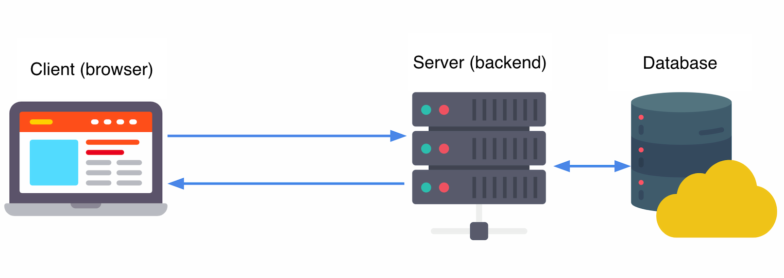

Щоразу під час заповнення полів форми не в тому форматі, який вони очікують, ми отримуємо зворотний зв'язок у вигляді повідомлень. Так працюють форми реєстрації, оформлення замовлення та будь-які інші, де важливий формат даних, що вводяться.
Це називається валідація форми - перевірка коректності значень, що вводяться. Якщо дані правильні, форма буде відправлена, в іншому випадку буде відображено повідомлення про помилку, пояснюючи необхідні виправлення.
Існує два види валідації - на клієнті (в браузері) і на сервері (бекенді). На практиці ці два підходи завжди використовуються разом.
Валідація на клієнті - це перевірка, яка відбувається в браузері, перш ніж дані форми будуть відправлені на сервер. Це зручно для UX (user experience), оскільки користувач миттєво отримує зворотний зв'язок в процесі або відразу після введення значення в поле.
Валідація на сервері - це остання лінія захисту веб-застосунку від неправильних або шкідливих даних. Перевірка, яка виконується на бекенді, після відправлення даних і перед їх збереженням в базі даних. Якщо дані не проходять перевірку валідності, відповідь відправляється назад клієнту, щоб повідомити користувачеві, які виправлення потрібно зробити.
У кожному сучасному браузері вбудована можливість валідації вмісту полів форми без використання JavaScript. Для цього використовується комбінація різних типів полів та їх атрибутів. Якщо користувач ввів невалідне значення, браузер покаже повідомлення.
Цікаво:
Поведінка вбудованої валідації форм відрізняється між браузерами, тому
на практиці використовують JavaScript-бібліотеки. Проте, варто знати
основи HTML5-валідації.
Логічний атрибут required позначає поле форми як обов'язкове для заповнення. Якщо поле порожнє, браузер виведе повідомлення-підказку, а форма не буде відправлена. Зовнішній вигляд повідомлення залежить від браузера і не може бути змінений за допомогою CSS. Спробуйте відправити форму з прикладу, не заповнюючи поля пошти або пароля.
See the Pen lesson-12-required-attribute by goit-academy (@goit-academy) on CodePen.
Корисно:
Щоб зробити групу радіокнопок або чекбоксів обов'язковою, необхідно
задати атрибут required кожному елементу групи.
Атрибути minlength і maxlength накладають обмеження на кількість символів, що вводяться, наприклад для пароля або імені користувача.
See the Pen lesson-12-length-attributes by goit-academy (@goit-academy) on CodePen.
Атрибути min і max дозволяють перевірити входження чисельного значення у вказаний діапазон. Можуть використовуватися тільки в полях з типом number, range або date.
See the Pen lesson-12-minmax-attributes by goit-academy (@goit-academy) on CodePen.
Атрибут pattern дозволяє вказати регулярний вираз (шаблон), щодо якого буде перевірятися значення поля. Використовується для розширення базової валідації. Наприклад, якщо потрібно, щоб ім'я користувача складалося з двох слів або пароль містив хоча б один символ у верхньому регістрі, один в нижньому регістрі і одне число.
Цікаво:
Регулярні вирази - це спеціальна мова опису шаблонів, яка
використовується у мовах програмування для пошуку, заміни або перевірки
відповідності послідовностей символів у рядках.
За замовчуванням, у разі помилки валідації, браузер відобразить стандартний текст «Please match the requested format». Додатковий текст-підказку, який буде відображений у повідомленні від браузера, можна вказати в атрибуті title.
See the Pen lesson-12-pattern-attribute by goit-academy (@goit-academy) on CodePen.